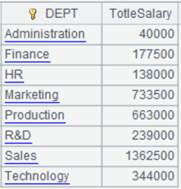
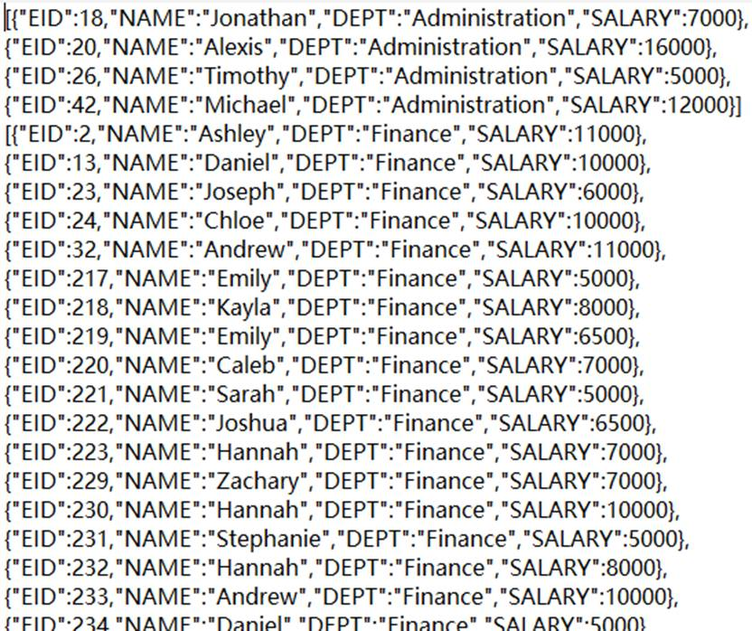

Description:
Use index to filter a cluster table according to the filtering condition.
Syntax:
T.icursor(C,…;w,I)
Note:
The function filters cluster table T according to filtering condition w using index I; automatically get the index if parameter I is absent.
Parameters:
|
T |
A cluster table |
|
C |
To-be-retrieved columns in the cluster table; get all columns when the parameter is absent |
|
w |
Filtering condition, in which the filtering field for T must be the same as the indexing field; support >, >=, <, <=, == and contain in its syntax |
|
I |
Index name; can be omitted |
Options:
|
@s |
Make the result set ordered by the index and support a big result set |
Return value:
A cluster cursor
Example:
|
|
A |
|
|
1 |
=file("emp1.ctx","192.168.0.101:8281") |
Open a cluster file |
|
2 |
=A1.open () |
Open a cluster table |
|
3 |
=A2.attach(table1) |
Retrieve cluster table table1 |
|
4 |
=A3.index(test_index2,GENDER=="F";DEPT;) |
Create index file test_index2 |
|
5 |
=A3.icursor(;DEPT=="HR",test_index2) |
Use index test_index2 to get all columns in A3’s cluster table where DEPT is HR and return the result as a cluster cursor |
|
6 |
=A5.fetch() |
 |
|
7 |
=A2.index(test_index1,EID<16;NAME;) |
Create index file test_index1 |
|
8 |
=A2.icursor(EID,SURNAME;NAME=="Smith",test_index1) |
Use index test_index1 to get EID column and SURNAME column in A2’s cluster table where NAME is SMITH and return the result as a cluster cursor |
|
9 |
=A8.fetch() |
 |